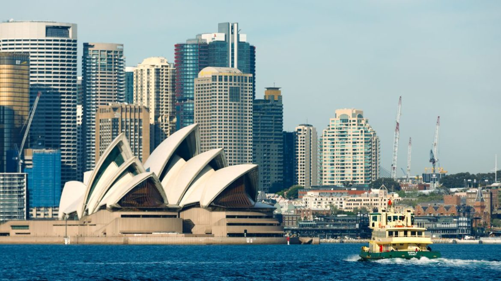

Sídney, capital de Nueva Gales del Sur y una de las ciudades más grandes de Australia, es famosa por su Casa de la Ópera de Sídney junto al puerto, con un característico diseño con forma de velas. El enorme Puerto Darling y el puerto Circular Quay más pequeño son núcleos de la vida ribereña, con el arqueado puente de la bahía de Sídney y el reconocido Real Jardín Botánico que se encuentra cerca. La plataforma exterior de la Sydney Tower, el Skywalk, ofrece vistas en 360 grados de la ciudad y los suburbios.
Está situada al sureste de Australia, a orillas de la amplia bahía de Sídney (Puerto Jackson). En la ciudad destaca la Casa de la Ópera, el puente de la bahía de Sídney, o Harbour Bridge, y sus playas. El área metropolitana está rodeada de parques nacionales que contienen bahías y ríos. La ciudad ha acogido eventos internacionales deportivos como los Juegos de la Mancomunidad de 1938, los Juegos Olímpicos de Sídney 2000 y la final de la Copa Mundial de Rugby de 2003, entre otros. Sydney es catalogada como una de las 15 ciudades más visitadas del mundo, con millones de turistas viniendo cada año a ver atracciones como el jardín botánico, el puerto de la ciudad, el Parque nacional Real, la Casa de la Ópera, etc.
En 1788, cuando llegó la primera flota de convictos traídos desde Gran Bretaña, se estima que menos de 8000 aborígenes habitaban las regiones aledañas a la ciudad actual. Arthur Phillip fundó una colonia penitenciaria en la cala de Sídney, una ensenada en la costa sur de Puerto Jackson (bahía de Sídney). En abril de 1789, un aparente brote de viruela acabó con la vida de la mayoría de los aborígenes. Además de la viruela, una serie de enfrentamientos violentos entre los colonos y la población original acabó con más aborígenes, quedando pocos cientos de ellos para 1820. El entonces gobernador de Australia, Lachlan Macquarie, decidió «civilizarlos, cristianizarlos y educarlos», y los separó de sus clanes. La era de Macquarie fue de gran desarrollo, y los convictos construyeron caminos, puentes y edificios públicos. La llegada de inmigrantes de las islas británicas entre 1830 y 1850 motivó la aparición de casas en las afueras, y la ciudad se expandió rápidamente.
El área urbana de Sídney se encuentra en una cuenca costera, que es bañada y bordeada por el océano Pacífico al este, las Montañas Azules al oeste, el río Hawkesbury al norte y el Parque nacional Real al sur. Se emplaza en una costa subemergente, donde el nivel del océano ha aumentado hasta inundar los valles de los ríos profundos (formando una ría) y tallando en la arenisca de hawkesbury. El Puerto Jackson, más conocido como la bahía de Sídney, es una de esas rías y es el mayor puerto natural del mundo
Sídney acoge diferentes festivales y algunos de los más grandes eventos sociales y culturales de Australia.
La Galería de Arte de Nueva Gales del Sur organiza el Premio Archibald, reconocido como el mayor premio de retrato de Australia. El Sydney Royal Easter Show se celebra cada año en el Parque Olímpico de Sídney. La final del Australian Idol tuvo lugar en la Ópera de Sídney, y la Semana de la Moda de Australia se lleva a cabo en abril/mayo. Las celebraciones de Nochevieja y del Día de Australia en Sídney son las más grandes en el país.
Sídney tiene una amplia variedad de instituciones culturales. La icónica Ópera de Sídney tiene cinco salas capaces de albergar una amplia gama de estilos de interpretación, y es el hogar de la Ópera de Australia y de la Sinfónica de Sídney. Otros lugares de interés son el Ayuntamiento de Sídney, el City Recital Hall, el Teatro Estatal, el Teatro Real, el Teatro de Sídney y el Teatro Wharf.
La Compañía de Danza de Sídney, bajo el liderazgo de Graeme Murphy durante finales del siglo XX, también ha ganado aclamación. La Compañía de Teatro de Sídney produce obras de teatro locales, especialmente del autor David Williamson, clásicas y de autores internacionales.
El deporte en Sídney es una parte importante de la cultura. La zona está bien dotada de parques y accesos a los cursos de agua, además de tener muchas áreas naturales incluso dentro del centro de la ciudad. En el centro de Sídney se encuentran el Jardín Chino de la Amistad, el Hyde Park, el The Domain y el Real Jardín Botánico. El área metropolitana contiene varios parques nacionales, incluido el Royal National Park, el segundo parque nacional más antiguo del mundo.
La ciudad tiene aproximadamente cuatro millones de habitantes. La mayoría es de origen británico o irlandés. Muchos asiáticos viven también en esta ciudad, en particular en el barrio chino. Sídney no es la capital de Australia, pero es la capital de Nueva Gales del Sur y el centro financiero y corporativo del país.
Sídney tiene la Ópera de Sídney que es una de las obras más famosas de la arquitectura contemporánea. El Puente de la Bahía, con un único arco de 500 metros de largo, es el otro símbolo de la ciudad.